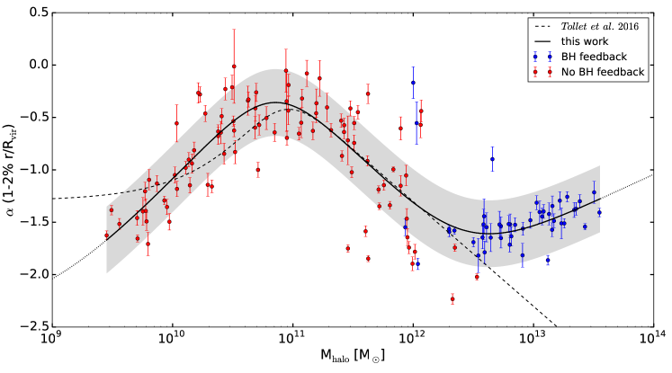
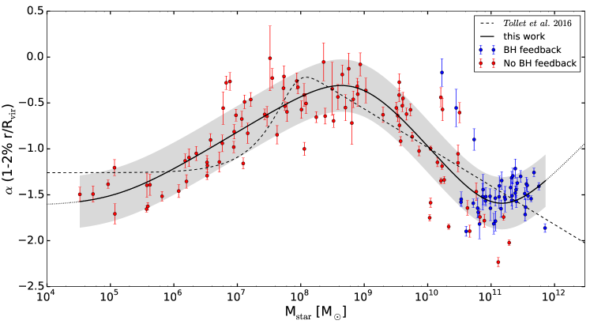
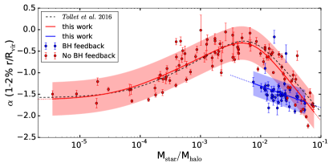
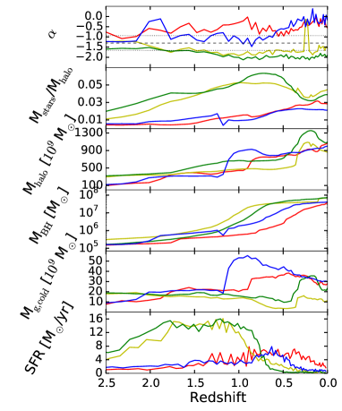

NIHAO-XXIII: كثافة المادة المظلمة كما تشكّلها التغذية الراجعة للثقوب السوداء
الملخص
نقدّم تحليلا منهجيا لاستجابة توزع المادة المظلمة لتشكّل المجرات على مدى يزيد على ثمانية رتب مقدار في الكتلة النجمية. ونوسّع العمل السابق المعروض في ورقة NIHAO-IV (Tollet et al.) بإضافة 46 محاكاة جديدة عالية الدقة لمجرات ضخمة أُنجزت مع تضمين التغذية الراجعة للثقوب السوداء. ونبيّن أن التدفقات الخارجة التي تولّدها AGN قادرة على معاكسة انكماش المادة المظلمة جزئيا، وهو الانكماش الناتج عن المركبة النجمية المركزية الكبيرة في الهالات الضخمة. وتتمثل المحصلة الصافية في إرخاء توزع المادة المظلمة المركزي، إذ ينتقل إلى مقاطع كثافة أقل حدة مركزية عند كتلة هالة أكبر من . ويظل التشتت حول القيمة المتوسطة لميل مقطع الكثافة () ثابتا إلى حد كبير ()، باستثناء المجرات ذات كتل الهالات حول ، عند الانتقال من الأنظمة التي تهيمن عليها التغذية الراجعة النجمية إلى تلك التي تهيمن عليها تغذية AGN الراجعة، حيث يزداد التشتت بنحو عامل مقداره ثلاثة. ونوفر صيغ ملاءمة مفيدة لميل مقاطع كثافة المادة المظلمة عند بضعة في المئة من نصف القطر الفيريالي على كامل مدى الكتلة النجمية: ( في كتلة الهالة).
keywords:
علم الكونيات: النظرية – المادة المظلمة – المجرات: التشكّل – المجرات: الحركيات والديناميكيات – الطرق: العددية1 المقدمة
إن تكوين صورة واضحة عن توزع المادة المظلمة في المجرات هو إحدى أهم الركائز اللازمة لفهم كامل لطبيعة المادة المظلمة، ولتأكيد راسخ لنموذج تشكّل البنى الحالي القائم على نموذج Lambda للمادة المظلمة الباردة (مثلا Ade et al., 2014).
تقدّم محاكيات الجاذبية الصرفة (عديمة التصادم) تنبؤات واضحة بشأن اعتماد توزع المادة المظلمة على طبيعة مكوّنات المادة المظلمة (مثلا الباردة مقابل الدافئة Navarro et al., 1997; Macciò et al., 2008; Schneider et al., 2014; Lovell et al., 2012)، ومن ثم توفر أداة لإلقاء الضوء على القطاع المظلم؛ لكن الوضع، للأسف، ليس بهذه البساطة. ففي السنوات الأخيرة، أصبح من الواضح أكثر فأكثر أن عملية تشكّل المجرات (التبددية والتصادمية) قادرة على تغيير توزع المادة المظلمة. وهناك أساسا عمليتان متنافستان تعملان في الوقت نفسه: تؤدي المركبة النجمية المركزية دور بئر جاذبي للمادة المظلمة (DM)، التي تميل عندئذ إلى الانكماش نحو المركز (مثلا Blumenthal et al., 1986; Gnedin et al., 2004; Abadi et al., 2010; Schaller et al., 2015)؛ ومن ناحية أخرى تولّد التدفقات الغازية الخارجة العنيفة تغيرا سريعا في جهد الجاذبية الكلي، وتنقل هذه التقلبات في الجهد المركزي على نحو غير عكوس (أي لا أدياباتيا Pontzen & Governato, 2012) الطاقة إلى الجسيمات عديمة التصادم، فتوسع بذلك توزع DM. وتنشأ هذه التدفقات الغازية الخارجة القوية بفعل التغذية الراجعة النجمية (وتغذية النوى المجرية النشطة الراجعة) (Navarro et al., 1996; Read & Gilmore, 2005; Mashchenko et al., 2008; Macciò et al., 2012; Pontzen & Governato, 2014; Madau et al., 2014; Freundlich et al., 2020).
ما يزال المقدار الدقيق للأثر النهائي لهذين التأثيرين المتنافسين، واعتمادهما على المخططات والمعاملات المعتمدة لوصف العمليات دون الشبكية، موضع نقاش (Dutton et al., 2017; Bose et al., 2019)؛ ومع ذلك يتزايد التوافق على أن للباريونات دورا مهما في تشكيل توزع المادة المظلمة (انظر المراجعة الحديثة لدى Bullock & Boylan-Kolchin (2017) وكذلك Qin et al. (2017) بشأن آثار إضافية قادرة على تعديل توزع DM).
حاولت عدة مجموعات استخدام مجموعات كبيرة من المحاكيات عالية الدقة لقياس أثر الباريونات في إعادة توزيع المادة المظلمة، وكيف يتغير ذلك بدلالة الكتلة النجمية للمجرة وكتلة هالتها. وقد أظهر Di Cintio et al. (2014)، باستخدام حزمة محاكيات MaGICC (Stinson et al., 2013a)، لأول مرة أن تعديل مقطع DM الابتدائي (سواء أفضى إلى التمدد أو الانكماش) يرتبط بكفاءة تشكّل النجوم المتكاملة في المجرة، وهي كمية يمكن التقاطها بنسبة الكتلة النجمية إلى كتلة الهالة في الزمن الحاضر ()، وأن هذه النتيجة تصمد مع تطبيقات مختلفة للتغذية الراجعة النجمية.
أكد Tollet et al. (2016) (يشار إليه فيما يأتي باسم NIHAO-IV) لاحقا نتائج Di Cintio et al. (2014) ووسّعها باستخدام 67 مجرة من NIHAO من Wang et al. (2015)، تغطي مجالا في كتلة الهالة يبلغ نحو عقدين من إلى . وأخيرا، أُكّد الدور المحوري للنسبة على نحو مستقل بواسطة Chan et al. (2015) باستخدام محاكيات FIRE من Hopkins et al. (2014) (انظر أيضا Oñorbe et al., 2015). ومن ناحية أخرى، لم تتمكن أي من الدراسات المذكورة أعلاه من تجاوز قمة كفاءة تشكّل النجوم الواقعة حول كتلة مجرتنا درب التبانة نفسها ( ). وبعد عتبة الكتلة هذه يُتوقع أن تصبح التغذية الراجعة من الثقوب السوداء فائقة الكتلة مصدر الطاقة المهيمن في الوسط داخل المجري وحول المجري (مثلا Croton et al., 2006).
دُرس أثر تغذية AGN الراجعة في توزع المادة المظلمة باستخدام محاكيات واسعة المقياس، من بين آخرين، بواسطة Duffy et al. (2010) باستخدام محاكيات OWLs، وبواسطة Peirani et al. (2017) باستخدام محاكيات horizon. وقد وجدت كلتا الدراستين انكماشا عاما للمادة المظلمة، في حين وجد Teyssier et al. (2011)، باستخدام هالة واحدة عالية الدقة بحجم عنقود، دليلا على تمدد أدياباتي طفيف بسبب تغذية AGN الراجعة العنيفة لديهم.
يتمثل نطاق هذه الرسالة في إعادة تحليل عينة NIHAO الجديدة والموسعة ذات التغذية الراجعة من AGN على نحو متسق، واختبار النتائج السابقة من NIHAO-IV وتوسيعها إلى مدى أكبر بكثير في الكتلة النجمية، وذلك لتقييم أثر تغذية BH الراجعة في توزع المادة المظلمة. لدينا ما مجموعه 96 مجرة شُغلت من دون تغذية AGN راجعة (29 أكثر مما في ورقة NIHAO-IV الأصلية)، و46 مجرة جديدة شُغلت مع تغذية AGN راجعة (من Blank et al., 2019)، مما يتيح لنا دراسة استجابة DM لتشكّل المجرات على مدى يزيد على ثمانية رتب مقدار في الكتلة النجمية. ونعرض صيغ ملاءمة جديدة قادرة على التقاط هذه الاستجابة بنجاح بدلالة معاملات مجرية مختلفة (مثل كتلة الهالة، والكتلة النجمية، وغيرهما) على مدى الكتلة كله.
2 المحاكيات
تستند هذه الرسالة إلى نسخة موسعة من حزمة NIHAO (التحري العددي لمئة جرم فيزيائي فلكي) للمحاكيات الكونية الهيدروديناميكية (Wang et al., 2015; Blank et al., 2019)
تعتمد مجموعة المحاكيات على الشفرة gasoline2 (Wadsley et al., 2017)، وتتضمن تبريد Compton، والتأين الضوئي، والتسخين من الخلفية فوق البنفسجية تبعا لـ Haardt & Madau (2012)، وتبريد المعادن، والإثراء الكيميائي، وتشكّل النجوم، والتغذية الراجعة من المستعرات العظمى والنجوم الضخمة (ما يسمى التغذية الراجعة النجمية المبكرة Stinson et al., 2013b). وضُبطت المعاملات الكونية وفقا لـ Ade et al. (2014): معامل Hubble = 67.1 Mpc-1، وكثافة المادة ، وكثافة الطاقة المظلمة ، وكثافة الباريونات ، وتطبيع طيف القدرة ، وميل طيف القدرة الابتدائي ، وتُحل كل مجرة بما لا يقل عن نصف مليون عنصر (مادة مظلمة وغاز ونجوم). وتختلف الدقة الكتلية والمكانية عبر العينة كلها، من كتلة جسيم مادة مظلمة قدرها (وتليين قوة قدره pc) للمجرات القزمة إلى و kpc للمجرات الأضخم (انظر Wang et al., 2015; Blank et al., 2019, لمزيد من التفاصيل).
ثبت أن محاكيات NIHAO ناجحة جدا في إعادة إنتاج عدة علاقات قياسية مرصودة، مثل علاقة الكتلة النجمية بكتلة الهالة (Wang et al., 2015)، وعلاقة كتلة غاز القرص وحجم القرص (Macciò et al., 2016)، وعلاقة Tully-Fisher (Dutton et al., 2017)، وتنوع منحنيات دوران المجرات (Santos-Santos et al., 2018). وتبين النتائج أعلاه أن مجرات NIHAO تمتلك توزعا واقعيا للكتلة المضيئة والكتلة الكلية، ومن ثم تشكل مجموعة مثالية من المحاكيات لدراسة توزع المادة المظلمة في المجرات. وقد حُللت بالفعل مجموعة فرعية من محاكيات NIHAO (Wang et al., 2015) في ورقة NIHAO-IV؛ وبالمقارنة مع ذلك العمل الأصلي، أضفنا هنا 29 مجرة أُنشئت بالشفرة نفسها وبالاختيار نفسه لمعاملات فيزياء العمليات دون الشبكية.
من أجل إجراء محاكيات لمجرات ضخمة قادرة على إظهار كتل نجمية ومعدلات تشكّل نجوم واقعية، أضفنا مؤخرا إلى شفرة gasoline2 نموذجا بسيطا لتشكّل الثقوب السوداء وتراكمها وتغذيتها الراجعة. ويستند النموذج إلى تراكم Bondi-Hoyle-Lyttleton، المحدود بمعدل Eddington، في حين تكون التغذية الراجعة في صورة طاقة حرارية صرفة (من دون زخم) توزع نظيريا على الغاز المحيط بالثقب الأسود (انظر Blank et al., 2019, لنقاش مفصل ودراسة وافية للمعاملات). ولدينا ما مجموعه 46 محاكاة جديدة، في مجال الكتلة النجمية ؛ وجميع المجرات محلولة بأكثر من نصف مليون عنصر، وكلها مجرات مركزية، كما في عينة NIHAO الأصلية.
2.1 ملاءمة المقاطع
بهدف الحفاظ على الاستمرارية مع الأعمال السابقة، نتبع بدقة المنهجية الموصوفة في NIHAO-IV. حددنا مركز الهالة باستخدام طريقة الكرة المتقلصة (Power et al., 2003)، ثم قسمنا الهالة إلى خمسين قشرة كروية ذات عرض ثابت على مقياس لوغاريتمي. وقيّمنا لكل قشرة متوسط كثافة المادة المظلمة، فحصلنا على مقطع كثافة الهالة.
أخيرا، نظرنا في القشور ذات أنصاف الأقطار بين 1% و2% من نصف القطر الفيريالي، ولائمنا مقطع الكثافة بملاءمة خطية على مقياس - للحصول على ميل المقطع (). وقد عُرّف نصف القطر الفيريالي بأنه نصف القطر الذي تساوي عنده زيادة كثافة الهالة 200 مرة من الكثافة الحرجة للكون. وقد (أعدنا) حساب قيمة الميل الداخلي لجميع المجرات بصرف النظر عما إذا كانت قد حُللت سابقا في NIHAO-IV.
3 النتائج
| [M⊙] | [M⊙] | [M⊙] | [M⊙] | 1- | |||||
| -1.35 | 12.64 | 1.27 | 1.14 | 1.68 | 0.32 | ||||
| -1.89 | 0.532 | 0.419 | 0.826 | 1.52 | 0.28 | ||||
| 1- | |||||||||
| -0.0385 | 39.11 | -2.58 | 0.728 | 1.84 | 0.708 | 0.37 and 0.28 |
تُلخَّص نتائجنا الرئيسية في الشكلين 1 و2، حيث نعرض اعتماد ميل الكثافة الداخلي بدلالة كتلة الهالة والكتلة النجمية على التوالي. في جميع الرسوم تمثل الرموز الحمراء المحاكيات من دون تغذية AGN راجعة عينة موسعة بالنسبة إلى NIHAO-IV)، في حين تمثل الرموز الزرقاء المحاكيات التي تتضمن تغذية AGN راجعة.
في مجال كتلة الهالة نؤكد النتائج السابقة من NIHAO-IV، أي السلوك غير الرتيب لاستجابة الهالة لتشكّل المجرات، مع ذروة في “تكوين النواة المسطحة” عند . وفي مجال كتلة الهالة الجديد المستكشف ( تنحرف المحاكيات الجديدة التي تتضمن تغذية AGN راجعة عن مجرد استقراء لصيغة الملاءمة لدى NIHAO-IV، وتُظهر إرخاء تدريجيا للهالة بمقطع كثافة أقل انحدارا مما تتنبأ به محاكيات Nbody الصرفة (Dutton & Macciò, 2014)، وإن كان لا يزال ذا قمة مركزية حادة.
تنطبق الاعتبارات نفسها على سلوك مقابل الكتلة النجمية المعروض في الشكل 2، إذ تُظهر المحاكيات الجديدة ذات تغذية AGN الراجعة انعطافا صاعدا في العلاقة عند .
حاولنا التقاط السلوك الإجمالي للميل الداخلي للهالة بدلالة و باستخدام نسخة محدثة من دالة الملاءمة المقترحة في NIHAO-IV:
| (1) |
حيث يكون الفرق الوحيد هو الحد الجمعي الإضافي. ونستخدم هذه المعادلة لملاءمة فهرس المجرات الموحّد؛ وتُسرد النتائج في الجدول 1.


في أعمال سابقة (مثلا Di Cintio et al., 2014; Chan et al., 2015) تبيّن أن معدل تشكّل النجوم المتكامل، المعلّم بنسبة ، هو المحرك الفعلي الذي يصف التغيرات في توزع المادة المظلمة. وتُعرض نتائج محاكياتنا في الشكل 3؛ وبما أن العلاقة بين كفاءة تشكّل النجوم وكتلة الهالة ليست رتيبة، فإن المجرات الضخمة، بمعنى ما، “تسير إلى الخلف” في الرسم وتُسقط فوق مجرات أقل كتلة، مما يحد من استخدام هذا المعامل لوصف الجمهرة كلها. ولوصف اعتماد على رياضيا، نستخدم مزيجا من دالة الملاءمة الأصلية لدى NIHAO-IV وملاءمة خطية على المقياس شبه اللوغاريتمي:
| (2) |
وبما أن فرعي هذه العلاقة يُستحصلان بملاءمة فهرسين مختلفين، فينبغي استخدام نقطة الانعطاف بحذر. ومن المعقول أن تقابل هذه النقطة حد الأدنى، الواقع حول ، أو على نحو مكافئ .
يكون التشتت حول جميع العلاقات المقترحة ثابتا بقيمة تقارب لعلاقة وبقيمة 0.28 لعلاقة (حُسب هذا التشتت باستخدام جميع المجرات في العينة، وترد قيمة التشتت المعتمدة على الكتلة في شرحي الشكلين 1 و2). ويمثل التشتت الثابت تقريبا جيدا لمعظم مجال الكتلة المدروس، باستثناء منطقة حول () في كتلة الهالة (الكتلة النجمية). ويبدو أن هذا التشتت الأكبر مستقل عن وجود تغذية AGN الراجعة أو غيابها، بل أكثر ارتباطا بهذا المقياس الكتلي المحدد.
ومن أجل فهم أصل هذا التشتت الكبير على نحو أفضل، نظرنا تفصيلا في أربع مجرات ذات كتل هالات متشابهة عند ()، لكنها ذات قيم شديدة الاختلاف لـ : اثنتان بمقاطع كثافة ضحلة ()، واثنتان حادتان مركزيا إلى حد كبير . في الشكل 4 نعرض التطور الزمني لخمسة معاملات مختلفة قد تؤثر في استجابة DM لتشكّل المجرات: وهي كتلة الثقب الأسود، وكمية الغاز البارد، ونسبة النجوم إلى الكتلة، وكتلة الهالة، ومعدل تشكّل النجوم.
يشير تحليلنا إلى أن المحرك الرئيسي لاختلاف لهذه المجرات هو اختلاف زمن تجميع الكتلة النجمية. فالمجرتان ذواتا المقاطع الحادة مركزيا عند تمتلكان SFR قويا بين و؛ ونتيجة لذلك تكون نسبة كتلتهما النجمية إلى كتلة الهالة مرتفعة جدا في الماضي، مما يؤدي إلى انكماش الهالة بسبب جسمها النجمي الكبير (انظر النقاش في NIHAO-IV). وتتحدد مثل هذه الهالة المنكمشة مبكرا جدا ()، وما إن تترسخ حتى يصبح من الصعب جدا على التدفقات الخارجة المتولدة من التغذية الراجعة النجمية أو تغذية AGN الراجعة أن تعكسها. وعلى العكس من ذلك، فإن المجرتين ذواتي المقاطع الضحلة عند تمتلكان SFR أقل شدة؛ ونتيجة لذلك يتكوّن الجسم النجمي تدريجيا أكثر، وتكون تقلبات الجهد الناتجة عن التدفقات الغازية الخارجة قادرة على توسيع توزع هالة المادة المظلمة (Pontzen & Governato, 2012).
4 المناقشة والاستنتاجات
قدمنا في هذه الرسالة تحليلا منهجيا لاستجابة توزع المادة المظلمة لتشكّل المجرات على مدى يزيد على ثمانية رتب مقدار في الكتلة النجمية. ويستند هذا العمل إلى حزمة NIHAO الموسعة (Wang et al., 2015)، التي تتضمن الآن تغذية AGN راجعة في الهالات الضخمة (Blank et al., 2019) وتضم أكثر من 140 مجرة عالية الدقة، بكتل هالات من إلى .
نؤكد النتائج التي سبق الحصول عليها في مجال كتلي محدود بواسطة NIHAO-IV (انظر أيضا Di Cintio et al., 2014; Chan et al., 2015)، وهي أن استجابة الهالة ليست رتيبة؛ فالهالات منخفضة الكتلة ( ) تحتفظ بمقطع CDM الحاد مركزيا الأصلي، ثم يحدث إرخاء تدريجي للهالة يبلغ ذروته بتكوين نواة مادة مظلمة مسطحة عند ، وبعد نقطة الارتكاز هذه تبدأ الهالة بالانكماش تدريجيا مرة أخرى لتصل إلى ميل قدره -1.5 عند .
وللمرة الأولى استكشفنا استجابة الهالة على مقاييس كتلية تتجاوز باستخدام عدد كبير من المجرات. ووجدنا أن التدفقات الخارجة التي تولدها AGN قادرة على معاكسة انكماش المادة المظلمة جزئيا على هذه المقاييس، وأن ثمة إرخاء للهالة، مع ميل متزايد لمقطع الكثافة، يستقر حول -1.2 عند طرف مجال الكتلة لدينا. ويلتقط سلوك ميل الكثافة الداخلي لتوزع المادة المظلمة، ، بدلالة كتلة الهالة أو الكتلة النجمية بسلوك تحليلي بسيط. ويظل التشتت حول القيمة المتوسطة ثابتا ومن رتبة 0.32، باستثناء الهالات حول . وعند هذا المقياس الكتلي، حيث نرى ذروة كفاءة تشكّل النجوم، فإن السلوكين المتنافسين: الانكماش الناجم عن تكوين جسم نجمي كبير، والتمدد الناجم عن التدفقات الخارجة العنيفة (بسبب التغذية الراجعة النجمية وتغذية AGN الراجعة معا)، يزيدان التشتت إلى أكثر من الضعف؛ ومن ثم ينبغي استخدام أي قيمة توقعية متوسطة، ولا سيما عند مقارنتها بالرصد، بحذر بالغ.
وأخيرا نقدم صيغ ملاءمة سهلة الاستخدام تميز استجابة الهالة بدلالة الكتلة النجمية وكتلة الهالة؛ ويمكن الاستفادة من هذه الصيغ في إعداد هالات المادة المظلمة مع أخذ أثر تشكّل المجرات في الحسبان، وفي إجراء مقارنات مع القيم المرصودة.
الشكر والتقدير
يشكر المؤلفون محكّم هذه الورقة، Alan R. Duffy، على تعليقاته التي حسنت قابلية قراءة عملنا. ويعرب المؤلفون عن امتنانهم لـ Gauss Centre for Super-computing e.V. (www.gauss-centre.eu) لتمويل هذا المشروع عبر توفير زمن حوسبة على GCS Supercomputer SuperMUC في Leibniz Supercomputing Centre (http://www.lrz.de). وأُنجز جزء من هذا البحث على موارد الحوسبة عالية الأداء في New York University Abu Dhabi. واستخدمنا حزمة البرمجيات PYNBODY (Pontzen et al., 2013) في تحليلاتنا.
References
- Abadi et al. (2010) Abadi M. G., Navarro J. F., Fardal M., Babul A., Steinmetz M., 2010, MNRAS, 407, 435
- Ade et al. (2014) Ade P. A. R., et al., 2014, Astron. Astrophys., 571, A16
- Blank et al. (2019) Blank M., Macciò A. V., Dutton A. A., Obreja A., 2019, MNRAS, 487, 5476
- Blumenthal et al. (1986) Blumenthal G. R., Faber S. M., Flores R., Primack J. R., 1986, ApJ, 301, 27
- Bose et al. (2019) Bose S., et al., 2019, MNRAS, 486, 4790
- Bullock & Boylan-Kolchin (2017) Bullock J. S., Boylan-Kolchin M., 2017, ARA&A, 55, 343
- Chan et al. (2015) Chan T. K., Kereš D., Oñorbe J., Hopkins P. F., Muratov A. L., Faucher-Giguère C.-A., Quataert E., 2015, MNRAS, 454, 2981
- Croton et al. (2006) Croton D. J., et al., 2006, MNRAS, 365, 11
- Di Cintio et al. (2014) Di Cintio A., Brook C. B., Macciò A. V., Stinson G. S., Knebe A., Dutton A. A., Wadsley J., 2014, MNRAS, 437, 415
- Duffy et al. (2010) Duffy A. R., Schaye J., Kay S. T., Dalla Vecchia C., Battye R. A., Booth C. M., 2010, MNRAS, 405, 2161
- Dutton & Macciò (2014) Dutton A. A., Macciò A. V., 2014, MNRAS, 441, 3359
- Dutton et al. (2017) Dutton A. A., et al., 2017, MNRAS, 467, 4937
- Freundlich et al. (2020) Freundlich J., Dekel A., Jiang F., Ishai G., Cornuault N., Lapiner S., Dutton A. A., Macciò A. V., 2020, MNRAS, 491, 4523
- Gnedin et al. (2004) Gnedin O. Y., Kravtsov A. V., Klypin A. A., Nagai D., 2004, ApJ, 616, 16
- Haardt & Madau (2012) Haardt F., Madau P., 2012, ApJ, 746, 125
- Hopkins et al. (2014) Hopkins P. F., Kereš D., Oñorbe J., Faucher-Giguère C.-A., Quataert E., Murray N., Bullock J. S., 2014, MNRAS, 445, 581
- Lovell et al. (2012) Lovell M. R., et al., 2012, MNRAS, 420, 2318
- Macciò et al. (2008) Macciò A. V., Dutton A. A., van den Bosch F. C., 2008, MNRAS, 391, 1940
- Macciò et al. (2012) Macciò A. V., Stinson G., Brook C. B., Wadsley J., Couchman H. M. P., Shen S., Gibson B. K., Quinn T., 2012, ApJ, 744, L9
- Macciò et al. (2016) Macciò A. V., Udrescu S. M., Dutton A. A., Obreja A., Wang L., Stinson G. R., Kang X., 2016, MNRAS, 463, L69
- Madau et al. (2014) Madau P., Shen S., Governato F., 2014, ApJ, 789, L17
- Mashchenko et al. (2008) Mashchenko S., Wadsley J., Couchman H. M. P., 2008, Science, 319, 174
- Navarro et al. (1996) Navarro J. F., Eke V. R., Frenk C. S., 1996, MNRAS, 283, L72
- Navarro et al. (1997) Navarro J. F., Frenk C. S., White S. D. M., 1997, ApJ, 490, 493
- Oñorbe et al. (2015) Oñorbe J., Boylan-Kolchin M., Bullock J. S., Hopkins P. F., Kereš D., Faucher-Giguère C.-A., Quataert E., Murray N., 2015, MNRAS, 454, 2092
- Peirani et al. (2017) Peirani S., et al., 2017, MNRAS, 472, 2153
- Pontzen & Governato (2012) Pontzen A., Governato F., 2012, MNRAS, 421, 3464
- Pontzen & Governato (2014) Pontzen A., Governato F., 2014, Nature, 506, 171
- Pontzen et al. (2013) Pontzen A., Roškar R., Stinson G., Woods R., 2013, pynbody: N-Body/SPH analysis for python, Astrophysics Source Code Library (ascl:1305.002)
- Power et al. (2003) Power C., Navarro J. F., Jenkins A., Frenk C. S., White S. D. M., Springel V., Stadel J., Quinn T., 2003, MNRAS, 338, 14
- Qin et al. (2017) Qin Y., Duffy A. R., Mutch S. J., Poole G. B., Geil P. M., Angel P. W., Mesinger A., Wyithe J. S. B., 2017, MNRAS, 467, 1678
- Read & Gilmore (2005) Read J. I., Gilmore G., 2005, MNRAS, 356, 107
- Santos-Santos et al. (2018) Santos-Santos I. M., Di Cintio A., Brook C. B., Macciò A., Dutton A., Domínguez-Tenreiro R., 2018, MNRAS, 473, 4392
- Schaller et al. (2015) Schaller M., et al., 2015, MNRAS, 451, 1247
- Schneider et al. (2014) Schneider A., Anderhalden D., Macciò A. V., Diemand J., 2014, MNRAS, 441, L6
- Stinson et al. (2013a) Stinson G. S., Brook C., Macciò A. V., Wadsley J., Quinn T. R., Couchman H. M. P., 2013a, MNRAS, 428, 129
- Stinson et al. (2013b) Stinson G. S., Brook C., Macciò A. V., Wadsley J., Quinn T. R., Couchman H. M. P., 2013b, MNRAS, 428, 129
- Teyssier et al. (2011) Teyssier R., Moore B., Martizzi D., Dubois Y., Mayer L., 2011, MNRAS, 414, 195
- Tollet et al. (2016) Tollet E., et al., 2016, MNRAS, 456, 3542
- Wadsley et al. (2017) Wadsley J. W., Keller B. W., Quinn T. R., 2017, MNRAS, 471, 2357
- Wang et al. (2015) Wang L., Dutton A. A., Stinson G. S., Macciò A. V., Penzo C., Kang X., Keller B. W., Wadsley J., 2015, MNRAS, 454, 83

